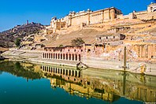
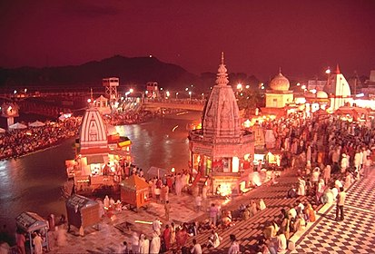
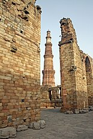
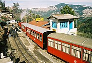

Recently I have traveled a few places. Here is a glimpse of all the places.
Jaipur is a popular tourist destination in India, forming a part of the west Golden triangle touristcircuit along with Delhi and Agra. The city serves as a gateway to other tourist destinations in Rajasthan like Jodhpur, Jaisalmer, Bikaner, Udaipur, Kota, Mount Abu and has two World heritage sites of Amer Fort and Jantar Mantar.
Haridwar is regarded as a holy place for Hindus, hosting important religious events and serving as a gateway to several prominent places of worship. Most significant of the events is the Kumbha Mela, which is celebrated every 12 years in Haridwar. The city is situated on the right bank of the Ganges river, at the foothills of the Shivalik ranges.
Delhi was the capital of two major empires, the Delhi Sultanate and the Mughal Empire, which covered large parts of South Asia. All three UNESCO World Heritage Sites in the city, the Qutub Minar, Humayun's Tomb, and the Red Fort, belong to this period. Delhi was the early centre of Sufism and Qawwali music. The names of Nizamuddin Auliya and Amir Khusrau are prominently associated with it. The Dehlavi dialect of Delhi was the earliest stage of the Hindustani language and part of a linguistic development that gave rise to the literature of Urdu and later Modern Standard Hindi. Major Urdu poets from Delhi include Mir Taqi Mir and Mirza Ghalib.
Shimla is home to several buildings that are styled in the Tudorbethan and neo-Gothic architectures dating from the colonial era, as well as multiple temples and churches. The colonial architecture and churches, the temples, and the natural environment of the city attract tourists. Major city centre's attractions include the Shri Hanuman Jakhu (Statue), Jakhu Temple, Viceregal Lodge, Christ Church, Mall Road, The Ridge and Annadale. The city centre's northernmost point is Jakhoo and the southernmost location is Annadale, the easternmost point is Sanjauli and the western point is Chotta Shimla.
